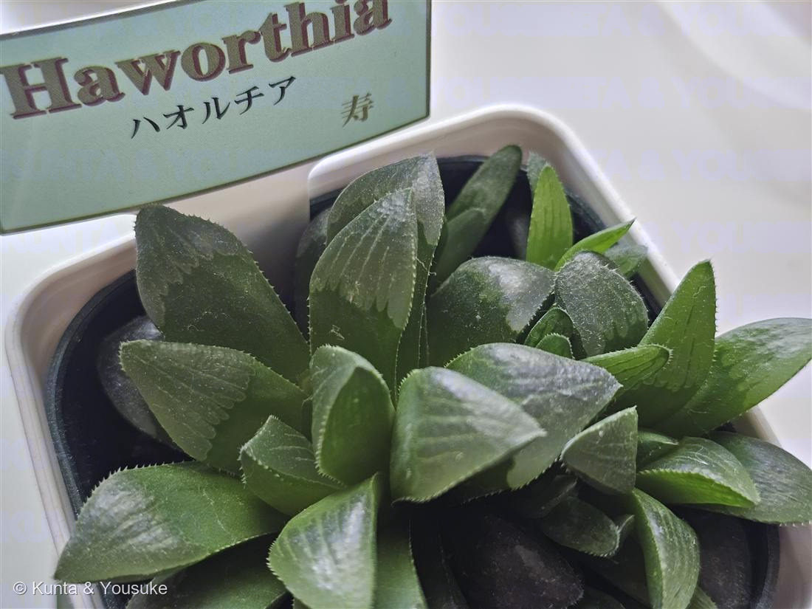

地図を読み込んでいるよ…
🔍 写真も地図も、押しているあいだ拡大して見られるよ（スマホは指を置いてすこし待ってね）。
🌍 の地図＝この子がもともと自生している場所を緑に。南アフリカ。
⚠ 地図は国（日本と中国だけ県・省）までしか塗れないから、ほんとうの分布より広く見えていることがあるよ。地図はだいたいの場所。正確なところは、上の文を見てね。
ハオルチア（寿）
Haworthia sp.（軟葉系／流通名「寿」）
別名 · 寿（ことぶき）・レツーサ系ハオルチア
ツルボラン科 · Asphodelaceae（ハオルチア属＝軟葉系）
おうちの植物世話：陽介 · ラベル「寿」葉先の“窓”で光をとりこむ
学名の由来
- Haworthia（ハオルチア）＝イギリスの植物学者・昆虫学者 エイドリアン・ハーディ・ハワース（Adrian Hardy Haworth）への献名。多肉植物の分類に貢献した人。
- 和名「寿（ことぶき）」＝縁起物の名。ふっくら群れて育つめでたい姿にちなむ、軟葉系（レツーサ類）の流通名。
この植物のこと
- ツルボラン科ハオルチア属の多肉植物。南アフリカ原産。三角の肉厚の葉がロゼットを組み、縁に細かい鋸歯。子株を出して群れる。
- 葉先の半透明の「窓（window）」がいちばんの見どころ：自生地では体を土に半分うずめ、地上に出した窓から光だけを取り込んで光合成する。強い日ざしと乾燥をやり過ごす、賢い作戦。だから強い直射は苦手＝明るい日陰を好む。
- 花は目立たない小さな白い花を、長い花茎の先にまばらに咲かせる（花より葉を楽しむ多肉）。
- お隣の No.018 エケベリア とは日ざしの好みが正反対（あちらは直射大好き）。だから同じ鉢の寄せ植えより、別々に置くほうがどちらも幸せ。
育て方のポイント（明るい日陰が好きな多肉）
- ☀ 光
- 明るい日陰〜レース越しのやわらかい光。強い直射は葉焼け（葉が白茶ける）。光が足りないと間のびするので、明るい室内の窓辺がちょうどよい。
- 💧 水やり
- 多肉の中ではやや水好き。土が乾いたらたっぷり。葉にシワが寄ったら水のサイン。ただし過湿・停滞水は根腐れ。
- 🌡 温度
- 生育適温おおむね15〜25℃。5℃以上を保てば冬越し可（霜は厳禁）。夏の高温多湿の蒸れが苦手→風通しよく。
- 🪴 土
- 水はけのよい多肉・サボテン用培養土。底穴のある鉢。今の鉢が小さいので、一回り大きい鉢に植え替えると根も窮屈でなくなる。
- 🌱 肥料
- 控えめ。生育期（春・秋）に緩効性を少量、または薄い液肥をたまに。真夏・真冬は不要。
※多肉・ハオルチア栽培の一般的な目安。うちの置き場所・季節を見ながら、二人なりに調整しよう。
【うちでは】もらったばかりで、これから育てる。うちは西向きの窓にレースのカーテン越し——ハオルチアにはちょうどいい“明るい日陰”で好相性。夏は冷房＋SwitchBotで室温22〜23℃・湿度50〜60%。鉢が小さいので、落ち着いたら一回り大きい鉢へ。
参考：多肉植物・ハオルチア（軟葉系）の一般的な栽培管理をもとに整理。